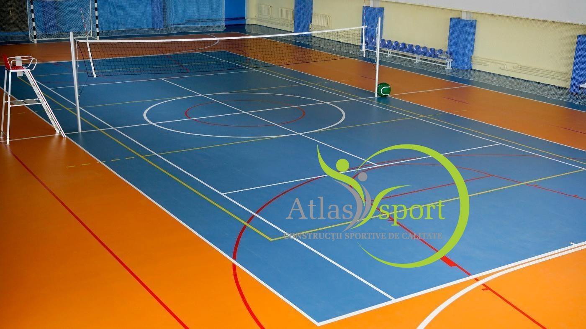

Terenul de volei – specificatii tehnice
Voleiul este un sport foarte iubit de toate categoriile de varsta. Practicarea acestuia presupune forta, viteza, spirit de anticipare, clarviziune si reflex. Ca popularitate, este al doilea sport in lumea, iar practicarea acestuia, vine la pachet cu o serie de beneficii pentru sanatatea noastra.
Terenul de joc reprezinta un dreptunghi, masurand 18 m x 9 m, impartit in doua patrate egale, separate de o linie de mijloc, si inconjurat de o zona libera de minim 3 m latime, pe toate laturile.
Pentru desfasurarea jocului in conditii optime, este necesar ca spatiul de joc liber sa aiba o inaltime de minim 7 m de la suprafata de joc.
Liniile de marcare ale terenului sunt de 5 cm latime si fac parte din terenul de joc. Acestea trebuie sa fie de culoare deschisa si diferita de culoarea solului.
Voleiul se poate juca pe pamint, pe iarba, pe bitum, zgura sau in sali de sport.
In ceea ce priveste fileul, aceasta trebuie masurat de la centrul terenului de joc si trebuie pozitionat deasupra liniei de centru, si sa atinga 2,43 m in inaltime pentru barbati si 2,24 m pentru femei.
Stalpii de sustinere ai fileului, vor fi plasati la o distanta de 0.5 m, maxim 1 m, de fiecare linie laterala, iar inaltimea acestora trebuie sa fie de 2.55 m.
Atunci cand se porneste constructia unui teren de volei, trebuie sa se acorde o atentie deosebita directiei terenului; acesta ar trebui plasat pe o directie Nord-Sud. Daca terenul de volei va fi realizat pe directia Est-Vest, acesta va fi practic, mai greu de utilizat dimineata devreme sau seara.
Zona de deasupra suprafetei de joc trebuie sa fie clara si fara obstacole, cum ar fi ramuri de copaci sau cabluri electrice.
In vederea realizarii unui teren de volei profesionist, oferim servicii de consultanta pentru clientii nostri. Dispunem de asemenea de antreprenori cu experienta in acest domeniu, care va vor ajuta in construirea uni teren de volei.